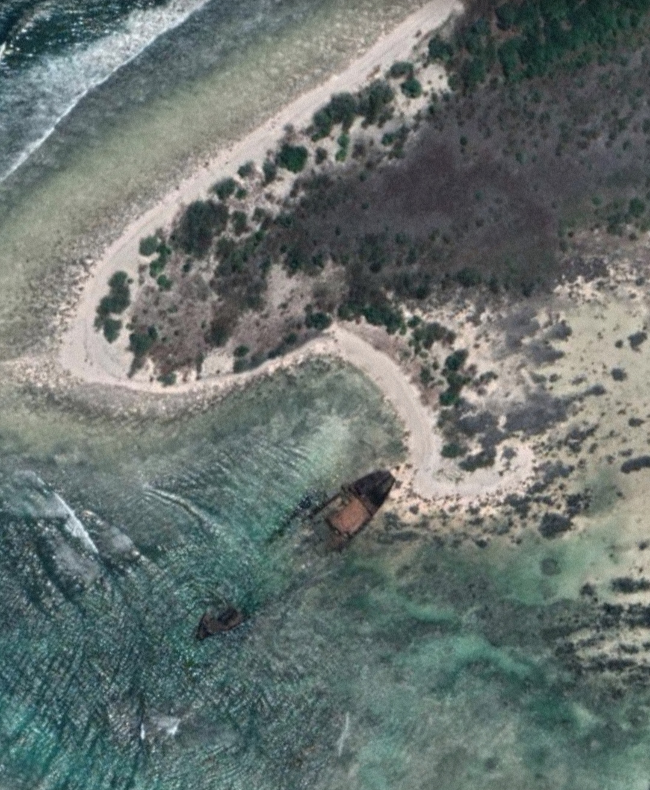

Introduction
The North Sentinel Tribe lives on North Sentinel Island in the Bay of Bengal, near India. They are famous for being cut off from the rest of the world, rarely interacting with modern society. This separation has helped them keep their traditional way of life, making them one of the few groups left untouched by outside influences. They've been on the island for thousands of years, creating their own customs, language, and social rules. Because they are so isolated, they've been able to continue hunting, fishing, and gathering food without much change. Studying the North Sentinel Tribe is important because it helps us understand how isolated groups live and the difficult choices about whether to contact them. This research will explore their culture, how they live day-to-day, and the problems they face while being careful to honor their way of life and history.
Historical Context
Historical Interactions with Outsiders: The North Sentinel Tribe's history includes limited interactions with outsiders, mostly mariners and explorers who accidentally stumbled upon their island. These encounters were often brief and marked by misunderstandings due to language barriers and cultural differences. The tribe's hostile reactions to outsiders approaching their island have been well-documented, with reports of arrows and other defensive actions taken against intruders.
Events Leading to Isolation: The isolation of the North Sentinel Tribe can be traced back to a combination of factors throughout history. Geographic isolation played a significant role, as North Sentinel Island is remote and surrounded by treacherous reefs, making it challenging for outsiders to approach safely. Additionally, the tribe's own choices and cultural norms, such as their preference for isolation and resistance to outside contact, have contributed to their continued separation from the modern world.
In the 19th and 20th centuries, various attempts were made by colonial powers and researchers to establish contact with the tribe. These efforts often ended in failure or were met with hostility, reinforcing the tribe's isolation. The Indian government has since recognized the need to protect the tribe's isolation and has implemented strict regulations prohibiting unauthorized access to North Sentinel Island.
Impact of Isolation: The isolation of the North Sentinel Tribe has had both positive and negative impacts on their community. On one hand, it has helped preserve their traditional way of life, language, and cultural practices. They have been able to maintain a sustainable lifestyle based on their deep knowledge of the island's resources. However, isolation has also left the tribe vulnerable to external threats such as diseases, exploitation by outsiders, and environmental changes. These challenges highlight the delicate balance between preserving cultural autonomy and ensuring the well-being of isolated communities like the North Sentinel Tribe.
Geographic and Environtmental overview
Location and Geography of North Sentinel Island: North Sentinel Island is a small landmass located in the Bay of Bengal, part of the Andaman and Nicobar Islands territory of India. It is situated to the west of the southern tip of South Andaman Island. The island is relatively small, measuring approximately 59.67 square kilometers (23.04 square miles).
The geography of North Sentinel Island is characterized by dense tropical forests, sandy beaches, and coral reefs surrounding the coastline. The interior of the island consists of hills and elevated areas covered with vegetation. The coastline is lined with mangrove forests, providing important habitats for various marine life.
Impact of Environment on the Tribe's Lifestyle: The geographical and environmental features of North Sentinel Island have a significant impact on the lifestyle and activities of the North Sentinel Tribe:
1. Subsistence and Resource Utilization: The tribe relies heavily on the natural resources provided by the island for their subsistence. This includes hunting terrestrial animals like wild pigs, gathering fruits, nuts, and roots from the forests, and fishing in the surrounding waters. The diverse ecosystem of the island supports their traditional way of life.
2. Shelter and Settlements: The dense tropical forests of the island provide materials for constructing shelters and tools. The tribe's housing structures are typically simple huts made from wood, leaves, and other natural materials found on the island. These structures blend with the environment and are well-suited to their lifestyle.
3. Isolation and Protection: The geographical isolation of North Sentinel Island, surrounded by reefs and rough seas, acts as a natural barrier against external intrusions. This isolation has helped the tribe maintain their cultural autonomy and traditional practices without significant external influences.
4. Vulnerabilities and Challenges: While the island's natural resources sustain the tribe, they also face challenges due to environmental changes. Rising sea levels, climate fluctuations, and potential impacts from nearby human activities (such as fishing or tourism) pose threats to their sustainable way of life and ecological balance

Interaction with Outsiders
The Onge people, another indigenous group from the Andaman Islands, knew about North Sentinel Island, calling it Chia daaKwokweyeh. They shared cultural similarities with the Sentinelese but couldn't understand their language, indicating a significant separation.
British Visits: In 1771, British surveyor John Ritchie saw lights on North Sentinel Island from a passing ship. In 1867, an administrator named Homfray visited the island. In 1867, during a storm, an Indian ship called Nineveh was wrecked near the island. Survivors landed on the beach and defended themselves from the Sentinelese until a Royal Navy rescue party found them.
Portman's Expeditions Maurice Vidal Portman led expeditions in 1880 to study the natives. They found abandoned villages and took six Sentinelese individuals to Port Blair, but they fell ill and two died, so the others were returned with gifts. In 1883, Portman landed again, thinking an eruption was a distress signal. They left gifts and returned to Port Blair. Portman visited the island multiple times until 1887. Early landings on North Sentinel Island included Indian exploratory parties under orders to establish friendly relations with the Sentinelese, which began in 1967. In 1975, Leopold III of Belgium visited the waters off North Sentinel Island during a tour of the Andamans.
.jpeg)
Shipwrecks have also occurred near the island. The cargo ship MV Rusley ran aground on coastal reefs in mid-1977, and the MV Primrose did so on 2 August 1981. After the Primrose grounded, crewmen noticed Sentinelese men building boats on the beach. The captain of Primrose requested firearms for defense, but due to a storm, they were not delivered. The crew was later rescued by a helicopter. The Sentinelese scavenged both shipwrecks for iron. Settlers from Port Blair also visited to recover cargo. In 1991, salvage operators were authorized to dismantle the ships. 
The first peaceful contact: The first peaceful contact with the Sentinelese was made by Triloknath Pandit, a director of the Anthropological Survey of India, and his colleagues on 4 January 1991. Although Pandit and his colleagues were able to make repeated friendly contact, dropping coconuts and other gifts to the Sentinelese, no progress was made in understanding the Sentinelese language, and the Sentinelese repeatedly warned them off if they stayed too long. Indian visits to the island ceased in 1997.
The Sentinelese survived the 2004 Indian Ocean earthquake, including the tsunami and island uplift. Three days after the earthquake, an Indian government helicopter observed islanders shooting arrows and throwing spears and stones at the helicopter. Despite the tsunami affecting their fishing grounds, the Sentinelese seem to have adapted.
In January 2006, two Indian fishermen were killed by the Sentinelese when their boat drifted too close to the island. No prosecutions followed this incident.
In November 2018, an American missionary named John Allen Chau was killed during an illegal trip to the restricted island. He planned to preach Christianity to the Sentinelese. Seven individuals were taken into custody by Indian police for aiding Chau's illegal access to the island. Indian law prohibits entering a radius of 5 nautical miles around the island. Efforts to recover Chau's body were abandoned due to the risk of a dangerous clash with the islanders.
.jpeg)
.jpeg)

.jpeg)